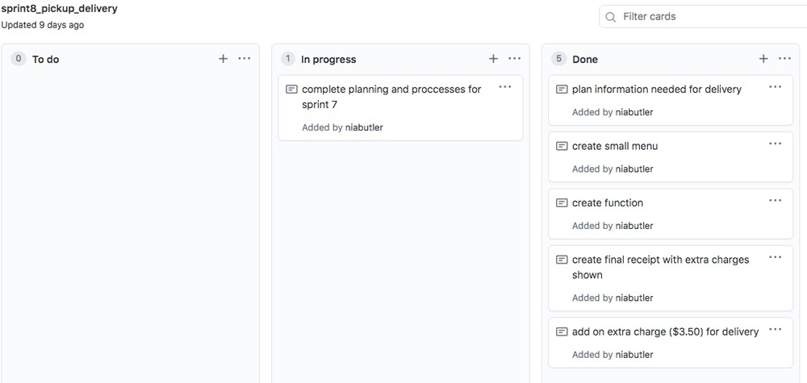
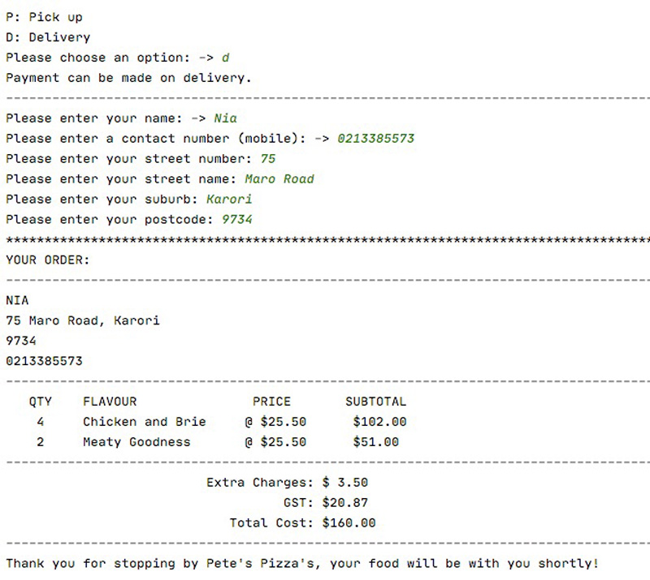
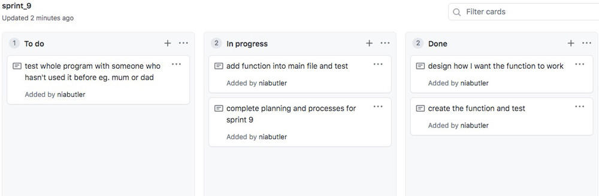

Brief
I would like to create a program which allows a user to create a pizza order. I want it to consist of components that allow the user to view the menu, add items to their order and provide contact details for a either a pick up or delivery order. The program should be easy to navigate and make sense to the user. It shouldn't crash or end without the user's choice eg. use loops.
Using Github to implement Agile processes
Agile processes management is an iterative development methodology which revolves around version control and developing improvements through testing and trialling. Each sprint or version my program is tested seperately before being implemented into the main program and tested again. Github is a version control software which I have been using to store each version or sprint of my code. It has also provided me with basic Kanban borads which I have used to create and overall plan or my entire program as well as individual plans or each sprint. At the end of each sprint, I complete a git 'commit' which uploads the most recent version of my sprint onto Github. These commits are recorded in my network, which shows my progress and also makes each version accessible without having to go back or undo any actions.
All of my Kanban boards
Network summary - all of my Github Commits
Project backlog - overall overview and ideas
Not everything on the project back log can and will be completed however all of my ideas are in one place. They are prioritised in order of importance to the program.

Sprint One
Aim: The aim for sprint one is to create a basic programme where the user can choose to see the pizza menu or quit the program. If they choose to see the pizza menu, they are also able to quit back to the main menu.
----------------------------------------------------------------------------------------------------------------------------------------------------------------------------------------------
Sprint plan and backlog:

Adding function to main program and testing it:

Reflection
In this version I created a very basic menu, which in the future, will be the place where I can run all my functions from. I ended up creating a lot more functions than I had planned for a supposedly basic sprint one, however I think this will help me further along. This will save me time later when I am trying to implement more complex functions, the basic ones such as starline() and dashline() will already be there to use. Next version I am going to work on making a 'create an order' function where the user can add pizza's to their order.
Sprint Two
Aim: The aim for sprint two is to add an 'add to order' option to the main menu. The user can add different flavoured pizza's and the amount to their order and then view their order afterwards, as well as being able to view their order from the main menu.
----------------------------------------------------------------------------------------------------------------------------------------------------------------------------------------------
Sprint plan and backlog:
This is a basic plan for the different components that I would like to create in my second sprint. I would like to create a function which allows the user to view the pizza menu and then add a flavour and quantity to the order. I then want to be able to show the user what they have ordered by printing their order like a receipt. At this point, I will only include the quantity and pizza flavour in the order.

Testing the function:

The 'list index out of range' error appeared when I tried to run the 'add to order' function in the testing file. This error came up because I wanted to print more items than I had in my multidimensional list. In order to fix this I added place holder text which I can go back and change later on when I clean up my code because the information is not relevant at the moment.
Adding function to main program and testing:

Everything works functionally! The user can choose a flavour and quantity of pizzas to add to their order and then choose to add another pizza or not. If not, then the order is printed.
Testing boundaries:
I asked a classmate to test my program and they decided they wanted 80 pizzas. Although I already had parameters around this (a maximum of 10 pizzas, with an error message if a larger number is entered) I thought "What if someone wanted more than 10 pizza's?". In order to address this issue, I am going to add a conformation message that will give the user the option to change the number of pizza's they ordered, if it's above the 'maximum' number. This means that they can still order more than 10 pizza's but the program will catch out any typing errors.

Reflection
I think that this sprint was a good start to creating my program. I now have a feel for the code and how I can make it work properly. Testing this program revealed small errors that I could fix easily such as 'index out of line', where I was just getting a little ahead of myself. Hopefully this error won't come up too many times in the future because I know what causes it and how to fix it. Asking a friend to test the program also gave me a different perspective of what a customer might like to order so was very beneficial for giving my program more of a realistic approach. Testing this program at an early stage helped me improve it because I could get a feel for what a customer is looking for in it and use this to cater to their needs in the future.
Sprint Three
Aim: For sprint 3, I would like to change the layout of my code by making the main menu a loop function. This means that there will be less room for errors in future versions of my program, because the program will always come back to the main menu instead of getting stuck inside a function.
----------------------------------------------------------------------------------------------------------------------------------------------------------------------------------------------
Sprint plan and backlog
Sprint 3 is going to be a small sprint which will improve the functionality of my program in the future. There are not as many tasks I need to complete for this sprint because I am not adding a function to the program.

Implementing loop into the main function and testing:
Everything works functionally! The user is able to view the menu and order a pizza and it will take them straight back to the main menu, instead of them having to manually exit out of the loop.
Having two options and choosing one:
My first option is the main function which I made in sprint 2. In this main function, any option I chose off the main menu would take the user to a different function, but then the main function would have to be called again. In sprint 3, I created a main function which ran as a loop so that whenever the smaller functions in the main menu were finished, it immediately returned to the main menu instead of having to call the main menu function again. This allows the program to run fully so the user doesn't get stuck inside a function and not be able to reaccess the main menu. I think that my sprint 3 version of the main menu function will be the best choice because it will help me avoid any other complications or extra code later on in the proccess.
Reflection
Sprint 3 was a small sprint, however I think it will make a huge difference to the way my program runs. Choosing this option instead of what I had before was in my best interest, because it will prevent my program from crashing in the future. Next sprint I would like to start adding more functions to the program so that the user can do more, however it is also important that I start designing and creating validation functions in order to stop my program from crashing.
Sprint Four
Aim: To create validation functions which allow the user to make mistakes in the program without it crashing. I would like to create a function to get a string, which strips it of spaces and capitalises it before giving it to the rest of the function, as well as a get string function where only 1 character can be entered. I would also like to make a function to get an integer, with parameter boundaries and a message.
----------------------------------------------------------------------------------------------------------------------------------------------------------------------------------------------
Sprint plan and backlog for different validations:
These are the different validations I would like to create in order to stop any confusion for the user and to stop the program crashing. One of the main validations I would like to design and create is a get_integer function which is used when a number/integer is requested. It will make sure that only numbers can be entered (no letters or symbols) and there will be an option to set a minimum and maximum value as well as an error message. Another validation which I would like to add is a get_string function which will be used when a string is requested. Often it will only be one letter long so the function can set a minium and maximum string length as well as an error message.


Psuedocode for validations
Why Psuedocode?
Psuedocode is a more natural language plan of how I want the program to run. It outlines the basic structure of the code without having to write out all of the finer details.
Testing Validations (get_integer_conformation):
This validation will be used when requesting a quantity of pizzas. It has a maximum value, however the user can enter more than the maximum if they would like more than 10 pizza's. This means that it will pick up any typos from users, but still let users order a larger quantity of pizzas ie. for an event etc.

Adding validations into main function and testing:
Reflection
Creating these validations was a really important step in creating a program which can be free from bugs and faults. These validations allow the user to enter incorrect data and give them the opportunity to change it without the program crashing. They are very important because it means that the program can survive basic human errors that would otherwise make the program fail. Testing these functions was also very important and I learnt from getting someone else to test my program, that it would be possible that someone could want to order more than 10 pizza's. This helped me make a real world connection, by considering someone else's perspective, which I then implemented a change in my program to make this possible. Next sprint I would like to start adding more functions which create extra tasks for the users such as creating a receipt with full price calculations including GST.
Sprint Five
Aim: In sprint 5, I would like to create a function which calculates the total cost of all the pizza's and GST from the customer's order, and prints it in a readable manner like a receipt.
----------------------------------------------------------------------------------------------------------------------------------------------------------------------------------------------
Sprint plan and backlog

Creating the function

I decided to include both the total price calculator function and the GST function in one because it was easier than making them seperate. This saved me space and time because all I had to do was add an extra line of code.

I have created a seperate calulator function which calculates the subtotal of each line of the order (the quantity times the price), the total cost of all the subtotals and the GST of the total cost (%15). I then called this receipt function at the end of the print order function so it could print the price after printing the customer order.
Testing the function

Here is a test of my new and improved print order function. It now includes the calculator and prints out the quantity, flavour, price, sub total, total price and included GST of the pizza's in the customer order. I have added a test option in my main menu in order to test my program without having to add new pizza's to my order every time I want to use my print order function before it's fully polished.
Reflection
This function was simple at first but I found that I had to be careful in making sure the mathematics was correct. The program had to correctly calculate costs of rows and overall costs as well as GST. I was able to moniter this through frequent tests of the function throughout the process of creating it. I didn't know that GST could be calculated by multiplying the total cost by 3/23 but I found that this was the best way to calculate the GST instead of multiplying it by 1.15 because this would be incorrect. Creating the calculator in a seperate function was a good idea because it means I can add it to the end of other functions such as printing the customer order with indexes later on in the code. Next sprint I would like to create a review or update option from the menu where the user can change a quantity of pizza already in their order, remove or add a new pizza.
Sprint Six
Aim: In sprint 6, I would like to create an update function where the user can review their order and make changes to it such as changing the amount of a flavour or pizza or adding and deleting pizza's from their order.
----------------------------------------------------------------------------------------------------------------------------------------------------------------------------------------------
Sprint plan and backlog
Creating two designs and choosing - exploring one option over another
For the update function I figured there were a few different ways to carry out the code, each one slightly different and incorporating varied ways of ending up with the same outcome. As a class we explored one option and wrote out a plan. I then designed my own plan as well, however I decided to combine the best components of both to create the best function. I wanted to make the function as simple as possible so I decided to create a second menu off the main menu under 'Review'. When this option is chosen, it prints out the customer order and then a second menu which has the option to change a quantity, remove a pizza or add a pizza. I decided to have a 'Change Quantity' option instead of an add or subtract a pizza to simplify the process and to remove any unecessary confusion with maths. In version/plan 2 I created a design which asked for the index number of a row before asking what the user would like to do with it eg. add a pizza or change quantity. For me this didn't flow nicely and I though it would confuse user because they don't know what the options are before choosing to change something. I incorporated this into my version 3 by printing the option menu before requesting the index number. All three plans/versions included conformation messages which are important incase the user makes a mistake. My validations such as 'get_validated_integer' and get_integer_conformation' can also help with this problem.

Option 1, discussed with the class

Option 2, my second option which I created

Option 3, my final option combining option one and two
Testing the function:
Testing sprint 6 with phone call story
Edited code after error was found
I decided to test the whole program at the end of sprint 6. I wanted to test it in a real life situation to see if my program could deal with how a customer orders. It was role played as if a customer was ordering over the phone using a user story, and I typed in what their requests. When doing this I came across an error to do with the index numbers. To make the program more user friendly, I decided to plus 1 onto the printed index numbers when the reciept was printed so that user's wouldn't get confused with having 0 as an option. The testing made me realise that because I changed it in one place, I had to change it in others as well, otherwise users wouldn't be able to select items using the actual index number that was printed because the number would be 'too big' (1 more than the actual item number in the multidimensional list). After I had gone through and fixed this I tested this function again and the user could then request to change any row in their order.
Reflection
This sprint I decided to create a user story to test the whole program with everything I have done so far. I benefitted from this test a lot because it revealed a very important error that I otherwise would not have picked up on. It was better that I found it now rather then later because I could address it and fix it now before it got too complicated. This was a simple error to make but could have been avoided if I decided to keep my program not as user friendly. I think that it was important that I made this change because it will be easier for the user to understand. Next sprint I would like to add a pick up or delivery option where extra charges can be added and personal information needs to be supplied.
Sprint Seven
Aim: To add a pick up or delivery option which adds an extra charge when delivery is chosen. User can enter details such as name and contact number for both pick up and delivery, and provide delivery information if they choose that option.
----------------------------------------------------------------------------------------------------------------------------------------------------------------------------------------------
Sprint plan and backlog for sprint 7 - providing pick up and delivery options
Testing the function
I tested the delivery option here. Everything worked well, including adding the delivery charge onto the receipt and total cost.
Reflection
At first I though this sprint would be a simple one however, I didn't consider the different printing layouts for the different options as well as how I would add the extra cost for a delivery. For the delivery charges, I had to go through different functions and in the end created two different functions for printing out the pick up and delivery orders. The challenge arose when I had to add on the extra charges because it only needed to be done if the customer chose delivery. To fix this issue, I added in an extra variable which I set to different values in different functions, depending on which option the user chose. This meant that I wouldn't have to create any extra functions which printed or calculated the reciept differently because all I had to do was change the variable depending on the customers choice. Next time I would like to create a function which checks the customers order for duplicates before adding a new pizza to avoid any double up orders. I would also like the customer to be able to cancel their order and this function would set the customers order and customer details list to 0.
Sprint Eight/Nine
Aim: To create a function which checks for duplicates in the customer order so they don't order the ssme pizza twice. I would also like to add a cancel order function which clears the users order and customer details if requested.
----------------------------------------------------------------------------------------------------------------------------------------------------------------------------------------------
Sprint plan and backlog for sprint 9 - checking for duplicates
Planning the function with psuedocode
Creating the function
The function checks to see if there is a duplicated value, if so, user is asked if they want to change the quantity of that pizza as they have asked for it twice. The new quantity then replaces the old quantity in the order. If there is no duplicate, the function returns none and the add to order function continues.
If the user wants to cancel their order, the function returns True which starts the main function again, setting the customer order and customer details list to 0. Also if the order is ended after they have entered their delivery or pick up details, the order resets for the next customer.
Reflection
For these sprints, although thoroughly testing them to make sure they worked, I have little evidence of this. Next time I will remember to capture the testing more as it shows evidence of how testing has improved my code to make sure that it functions correctly and works to the best of its ability. Testing was a really important part of this sprint because it made me realise that I had to change a few things in the main function for the order to cancel properly. To cancel the order properly, I had to put the main function in a loop so that when the cancel order function returned True it would reset the program and start again with an empty customer order and empty customer details list. I also had add a return True to the end of the pick up or delivery option when the order was completed so that the next customer would start with a new order and customer details.
Testing
Testing whole program
This test revealed a simple error that was easy to fix. There was meant to be one positional argument but two were given. From testing on my mum who hadn't used this program before, I found it interesting to learn that she didn't find the code natural to follow. When she clicked 'see menu' she expected to start ordering straight away however she didn't realise that there was a seperate option to add to order after the menu was shown. I am not going to change my code because of this however, I found it interesting that someone who hadn't seen it before would have epected a different order of function. If I was to continue developing this I may consider changing the way this part of the program would work so it was good to have a different opinion on the way it worked.
Final test with no errors.
Testing new validations
get_validated_integer test
testing the parameters of this validation
get_validated_phone test
Testing the parameters of this validation.
This error appeared when I tried to print an empty customer order. I had to create an if loop for if the order was empty, it would print "Your order is empty". This improved my program as it prevented any crashes and the program identified an error before it occured.
This is a common error that popped up because I was using the .upper() feauture. During the first few sprints it wasn't working because I didn't put the empty brackets at the end so this error came up a few times. I learnt how it worked and changed it so this error didn't come up again. This improved my program because it prevented errors before they occured as the function would always pick up an upper case letter.
Standups
At the start of every lesson we write standups on the board of what want to complete in the lesson. Here are some examples.
Relevant Implications
Usability
Usability is how understandable and easy to use the program is, to someone who has never used it before, ie. a customer. A user should be able to recognise, diagnose and recover from errors without it disrupting the flow of the program, however even better, the application should be able to fix minor errors without the user knowing.
To address this implication, I have implemented error messages throughout my program, which tell the user what they have done wrong and what should have been entered in a clear and understandable language. By adding parameters to validation functions such as ‘get_validated_string’, I am able to create an error message, specific to the information I am asking for such as ‘You have entered too many characters, please try again’. This feedback allows the user to recognise their error and gives them a chance to re enter their information to the correct standard. I have also implemented a menu system, which is easy to understand and acts as a 'home' for the user to always return to, after completing a task. From this menu system there is also an option to review the menu at any point in the users experience, showing the usability heuristsic of visibility of system status.
Functionality
The relevant implication, functionality, is about making sure my program works correctly without interfering with the users experience. This means that it doesn't crash, it adds up and stores values correctly and is free from bugs such as.
Throughout the process of creating my program, I have addressed this implication by completing regular tests on the functions by themselves, before inserting them into the main program. This is to ensure they are executing correctly and making no errors. I also tested the main program each time I added a new function to ensure it had been inserted correctly and was working properly inside the program. On top of this, I tested my program with more extensive tests which were designed and executed like a user story, with a customer ordering like they would over the phone. This allowed me to experience the users story by following a customers wishes and seeing how my program would work in the real world. By testing each function individually and then as part of the main program, it allowed me to find any bugs or errors that could stop the program running properly which would interfere with the users experience. It revealed any critical errors, crashes or failures in my program, and I was able to use this feedback to improve my program. Testing with user stories also allowed me to learn about the user and make the program function for them.
Future proofing
Future proofing is making the code accessible to yourself and others to edit, change and update in the future. If someone else was to come and takeover the program, they should be able to efficiently work out how the program works, determine the purpose of each function and understand the python.
To address this implication, I have built my program using a function structure, where a new feature = a new function which can be easily integrated into the main function. This means that if a certain part of the program isn’t working, it is easy to find the problem and fix it because it won’t be woven into a whole string of messy code. Another way I have addressed this, is by commenting my code and adding doc strings to the beginning of each function. Docstrings describe the function and what it does which makes it easier for others to know what the code does, when looking at it with new eyes. Commenting the code also helps users to understand what a particular lineo the code is doing, for instance calculating GST. I have also run my code through a code checker which ensures that tab indents, spacing and line lengths fit with the correct Python conventions.
Overall reflection
Overall I think I have come out with a program which works functionally and is user friendly. Using github has allowed me to control and keep up to date each sprint or version of my code. This method of project management worked well for me because I was able to see the work I had completed and which helped break down a big process into smaller bits, making it easier to handle and feel accomplished. Using Agile meant that each individual sprint was specific to a function and an idea in the overall program. Working idea by idea helped me to develop a program that was user friendly and I knew would work because of the testing that had been completed. Testing was a really important part of this proccess because it meant that I could fix problems at their root and make sure everything worked before adding it into the main program. This stopped any major problems popping up and meant that by the time the program was finished it was working fucntionally with no errors or crashes popping up.